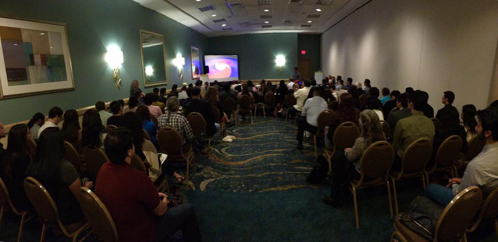

October 3, 2017
Congratulations to Rai Weiss, Kip Thorne, and Barry Barish for winning the 2017 Nobel Prize in Physics "for decisive contributions to the LIGO detector and the observation of gravitational waves"! The gravitational wave community is very proud. See this Popular Science article for a celebration of the contributions of the LIGO Scientific Collaboration and others to the momentous achievement of the first direct observation of gravitational waves.

Illustrations by the Nobel Media/Ill. N. Elmehed.
Sept 27, 2017
The gravitational wave signal GW170814, originating from two merging black holes, was observed in LIGO and Virgo data on August 14, 2017. This is the first reported observation of a gravitational wave signal in the LIGO and Virgo detectors after Virgo joined the second Advanced LIGO observing run on August 1, 2017. This observation is now published in PRL.

The sky localization improvement using Virgo data in addition to LIGO data. LIGO/Virgo/A. Mellinger.

The GW170814 signal. LIGO/Caltech/MIT/LSC.
July 8, 2017
Jess had the great pleasure of taking part in the Kavli Summer Program in Astrophysics 2017 on Astrophysics with gravitational wave detections at the Niels Bohr Institute in Copenhagen, Denmark during July-August, 2017.

Kavli Summer Program in Astrophysics 2017 group photo, taken by Corinne Toulouse.

Project discussions at the Niels Bohr Institute. Photo by Silvia Piranomonte.
June 1, 2017
Jess delivered the annual public Mandel Lecture at the Rio Theatre in Santa Cruz hosted by the University of California Santa Cruz and sponsored by Steve Mandel and Carol Foote.

Photo credit Michael Bolte.

Photo credit UCSC.

Photo credit Michael Bolte.
April 28, 2017
Jess gave the Doc Morris and John D. Schopp Memorial Public Lecture at San Diego State University on "LIGO and the Beginning of Gravitational Wave Astronomy”.

Photo by TJ Massinger
Feb 24, 2017
Successful LIGO Detector Characterization meeting at LIGO-Livingston.
This past week, members of LIGO's 'DetChar' group convened at the LIGO detector in Livingston, Louisiana to discuss progress in characterizing the Advanced LIGO detectors during their second observing run and plans for the coming years.
Jan 30, 2017
Jess presented work on exploring the impact of Advanced LIGO transient noise on the estimation of astrophysical parameters of binary black hole coalescences at the 2017 APS April meeting in Washington DC.

A simulated binary black hole gravitational wave signal injected into light scattering arches in LIGO-Livingston.

Sky localization using the LIGO detectors as the injected signal sweeps through the LIGO-Livingston scattering noise.
Dec 19, 2016
Jess visited her alma mater, Mohonasen High School. She met with four classes, over 100 students, to speak about gravitational waves, LIGO, what it's like to be a scientist and how to use critical thinking skills to read news about science. After school she ran a coding workshop aimed at girls on basic html and how to build a website (using CodeAcademy). Read more in the Daily Gazette.

Students at Mohonasen High School.
Jess speaking about gravitational waves at Mohonasen.
Dec 1, 2016
Jess and Caltech graduate student Max Isi represented LIGO at the Legislative Staffers Caltech Holiday Reception, joining other scientists speaking about Caltech and JPL science efforts to members of the California and LA governments.
Oct 15, 2016
Jess joined other LIGO Scientific Collaboration members at the 2016 SACNAS National Diversity in STEM Conference in Long Beach, CA. Jess gave a talk in the Gravitational Wave Astronomy scientific symposium session, which generated strong interest among SACNAS attendees. (All photos by LIGO-Hanford lead operator Corey Gray.)

Jess speaking about the LIGO interferometers and recent detections.

The Gravitational Wave Astronomy scientific symposium session.
The LIGO team onstage before Gaby Gonzalez's plenary talk.
Sept 22, 2016
Jess gave a talk on "LIGO and the Beginning of Gravitational Wave Astronomy" at the U.S. Department of Energy's Brookhaven National Laboratory on Thursday, September 22, 2016 as part of an ongoing series of seminar free and open to the public sponsored by Brookhaven Science Associates and Brookhaven Women in Science.

2016 Blanco fellows Danielle Frostig and Michael Antia and their mentors.
Aug 15, 2016
Congratulations to the 2016 Victor M. Blanco Fellowship recipients Danielle Frostig (Harvard University) and Michael Antia (University of Central Florida)! The Blanco Fellowships are sponsored by the National Society of Hispanic Physicists and awarded to outstanding students in the LIGO Summer Undergraduate Research Fellowship program. Michael Antia worked with Jess on noise hunting in Advanced LIGO during the 2016 LIGO SURF program.
Feb 12, 2016
Jess wrote a summary of the GW150914 Detector Characterization companion paper for the general public in CQG+ which explains how we can be sure the GW150914 gravitational wave detection was astrophysical and not the result of terrestrial noise. This summary benefitted greatly from the addition of illustrative comics by the talented Nutsinee Kijbunchoo, a former operator at LIGO-Hanford and current graduate student at ANU. (antimatterwebomics.com)
The menagerie of LIGO glitches.

Jess and an NPR reporter at LIGO-Livingston.
Feb 11, 2016
The announcement of the discovery of gravitational waves from the merger of two black holes at the LIGO-Livingston observatory! The site staff and visiting scientists took questions from visitors and the local media after a screening of the press conference in Washington, DC.